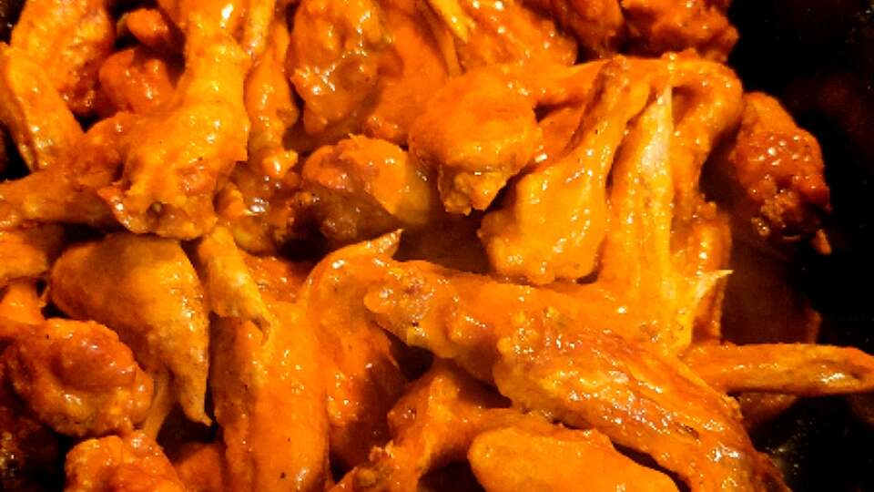

Buffalo Chicken Wings

Description
Who doesn't love a good hot wing?
These are the best wings I've ever had. They go great with an ice cold cola.
Ingrediants
- ½ cup all-purpose flour
- ¼ teaspoon paprika
- ¼ teaspoon cayenne pepper
- ¼ teaspoon salt
- 10 chicken wings
- oil for deep frying
- ¼ cup butter
- ¼ cup hot sauce
- 1 dash ground black pepper
- 1 dash garlic powder
Steps
- In a small bowl mix together the flour, paprika, cayenne pepper and salt. Place chicken wings in a large nonporous glass dish or bowl and sprinkle flour mixture over them until they are evenly coated. Cover dish or bowl and refrigerate for 60 to 90 minutes.
- Heat oil in a deep fryer to 375 degrees F (190 degrees C). The oil should be just enough to cover wings entirely, an inch or so deep. Combine the butter, hot sauce, pepper and garlic powder in a small saucepan over low heat. Stir together and heat until butter is melted and mixture is well blended. Remove from heat and reserve for serving.
- Fry coated wings in hot oil for 10 to 15 minutes, or until parts of wings begin to turn brown. Remove from heat, place wings in serving bowl, add hot sauce mixture and stir together. Serve.